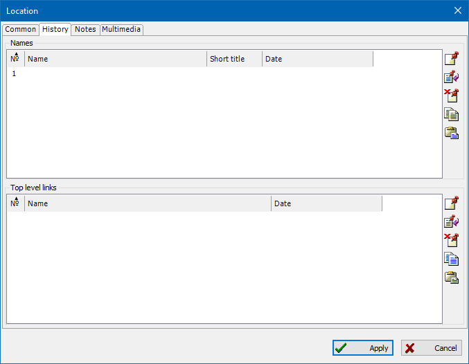
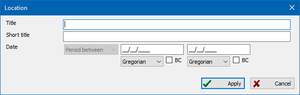
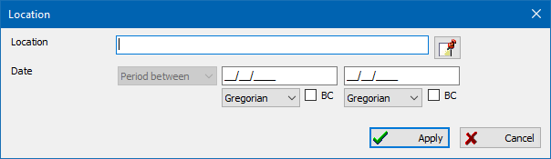

Geographical location records are elements of the single location directory, where each location has its coordinates. When you define a location for event/fact in person and family record, you can do this without referring to the location directory. But if you want to be able to see the location on geographical maps in the future, you have to have to add a location record to the location directory—find a settlement on Google Maps and bind the location's coordinates.
You can add text notes or multimedia objects (for example, a photo) to a geographical location.
To assign coordinates to a location do the following:
The "Show" button opens mini-map at the specified location.
There is a uniting table on the "Locations" tab of the main working window, which includes all locations available in the database. A location summary to the right of the table shows all events, connected to persons and families, that refer to the selected location.

This dialog is designed to enter and manage historical information about a place: bindings of place names and links to the top levels of the administrative-territorial division hierarchy to the period of action. That is, if a certain pop. point has changed its name several times throughout history, you can enter all the names in this dialog and indicate the time intervals in which they were active. If a certain village or city was part of different districts in different periods, this can be entered in the lower section of the dialog - "Top level links".
It is possible to use different approaches to maintaining a directory of places:
Note: when you enable the option "Options \ Locations and Maps \ Extended Places" and connect hierarchically organized places to dates in the event editing dialog, the places begin to automatically adjust when the date changes (the full long name of the place on a specific date of the event is determined). This mechanism will also work when using the place management tool and at the stage of verification of uploaded files.

The dialog is intended for editing the name of a place and its period of validity. For example: "Serenìsima Repùblega Vèneta", the period of validity of the name from 697 to 12/05/1797.

The dialog is intended for editing a link to a record of a higher-level place and period of subordination. For example, "Venèsia" was part of "Serenìsima Repùblega Vèneta" from 697 to 12/05/1797 and of "Kaiserthum Österreich" from 17/10/1797 to 15/03/1867.
Example of a fully completed history:

See also: Event/fact, Note, Multimedia, Map.